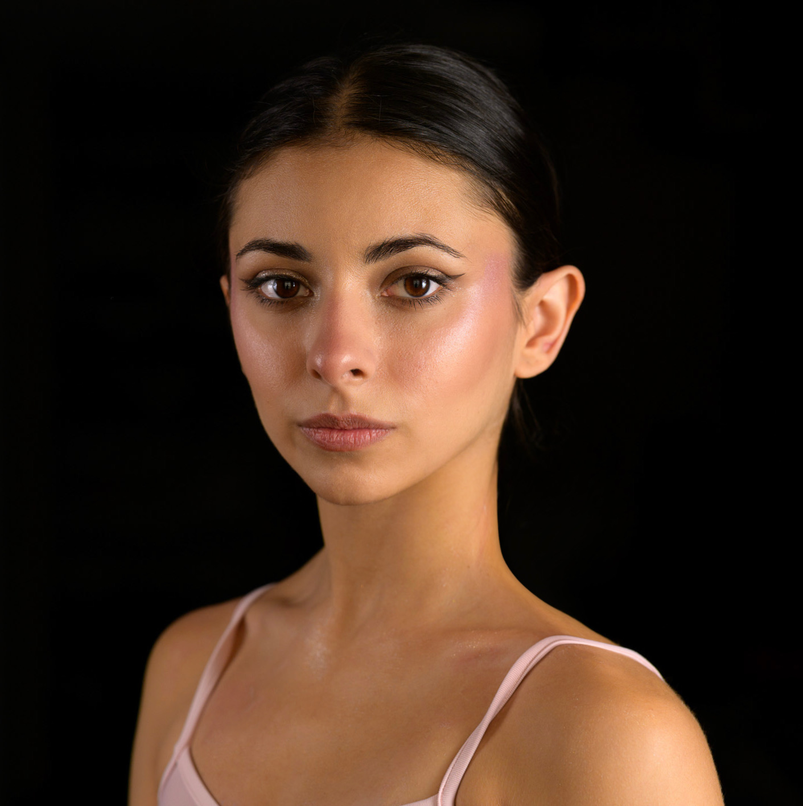

Flyout Transition Company
2025 — 2026Contemporary Dancer · Paris, France
Litany Evelyn Hart · Doggy Rugburn Brandon Lagaert · Dark Flock MANACAN · What Lies Alone Megan Castro

About
Diverse professional freelance dancer with 2 and a half years stage experience across contemporary, classical and neoclassical repertoire. Expressive, adaptable and disciplined, I bring artistic precision and creativity to every performance. Pro-active, flexible and ambitious, my purpose is to bring passion and creative vision through my own artistic voice.
Reel
Experience
Contemporary Dancer · Paris, France
Litany Evelyn Hart · Doggy Rugburn Brandon Lagaert · Dark Flock MANACAN · What Lies Alone Megan Castro
Contemporary & Neoclassical Soloist · Paris, France
Callas · Le Bal I. Florin · Omerta A. Depras
Classical Ballet First Soloist · Dushanbe, Tajikistan
Giselle A. Horsky · Chopeniana/Les Sylphides M. Fokin · Carmen Suite A. Alonso · Pas de trois in Swan Lake & La Bayadère M. Petipa
Classical Ballet Dancer · Kyiv, Ukraine
The Nutcracker: Tea (Chinese Dance) & Snowflakes, 2nd soloist (A. Shoshin) · Études (H. Lander)
Training & Awards
Resume
View the full CV — professional experience, training, awards and references.
View Full Resume (PDF)